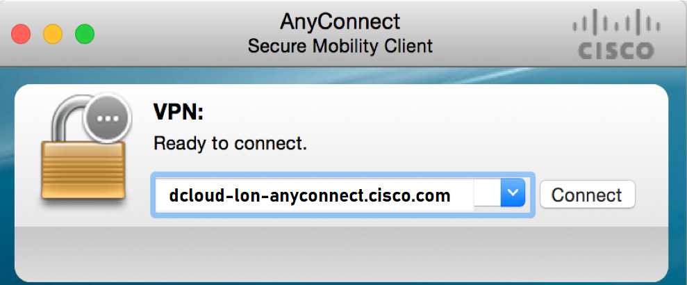
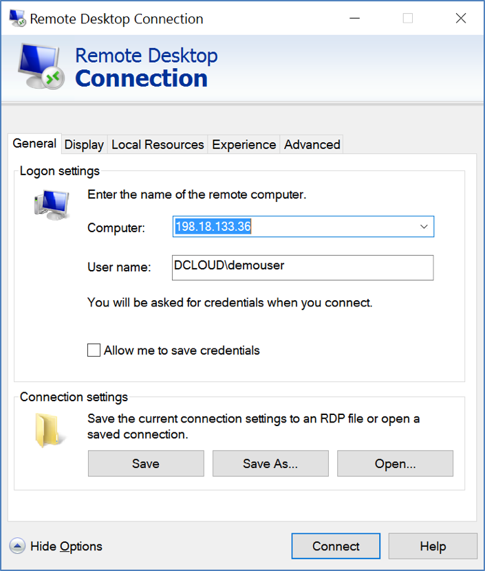

Task 1 - VPN connection
You will initiate VPN connection to the network setup used in this lab. All the devices in this lab are running as Virtual Machines using VMware as Hypervisor. At the end of this task, you will have VPN connection to this remote setup
Step 1: Connect to lab using anyconnect VPN
You will connect to Anyconnect url using Cisco VPN AnyConnect client and with the username & password as documented in below table. Below screenshot shows an example of that VPN connection.
| Pod ID | Attendee Name | Anyconnect url | Anyconnect Username | Anyconnect Password |
|---|---|---|---|---|
| POD 1 | dcloud-lon-anyconnect.cisco.com | |||
| POD 2 | dcloud-lon-anyconnect.cisco.com | |||
| POD 3 | dcloud-lon-anyconnect.cisco.com | |||
| POD 4 | dcloud-lon-anyconnect.cisco.com | |||
| POD 5 | dcloud-lon-anyconnect.cisco.com | |||
| POD 6 | dcloud-lon-anyconnect.cisco.com | |||
| POD 7 | dcloud-lon-anyconnect.cisco.com | |||
| POD 8 | dcloud-lon-anyconnect.cisco.com | |||
| POD 9 | dcloud-lon-anyconnect.cisco.com | |||
| POD 10 | dcloud-lon-anyconnect.cisco.com | |||
| POD 11 | dcloud-lon-anyconnect.cisco.com | |||
| POD 12 | dcloud-lon-anyconnect.cisco.com | |||
| POD 13 | dcloud-lon-anyconnect.cisco.com | |||
| POD 14 | dcloud-lon-anyconnect.cisco.com | |||
| POD 15 | dcloud-lon-anyconnect.cisco.com | |||
| POD 16 | dcloud-lon-anyconnect.cisco.com | |||
| POD 17 | dcloud-lon-anyconnect.cisco.com | |||
| POD 18 | dcloud-lon-anyconnect.cisco.com |
Note
lab admin will furnish the credentials information to the participant. If you don't have this information please ask the lab speakers.

Step 2: Enter VPN credentials
After prompted for credentials, use the credentials documented in above table or provided by the lab admin.
- Below is an example of user logging into a reference POD:

- Hit accept when the prompt appears to accept the VPN connection login

Step 3: RDP to workstation
In this step, you will connect to the workstation with Remote Desktop (RDP) client on your machines. Use below details for this RDP session:
- Workstation: 198.18.133.36
- Username: dclouddemouser
- Password: C1sco12345
Below screenshot is only an example for this RDP connection:

Step 4: SSH client - MTputty
Once you have the RDP session to the remote workstation, then you will use MTPutty client to connect to all devices (Nexus and Ansible server/node) in this lab.
MTputty is already installed on the Desktop of the workstation where you connected using RDP. Run this application by clicking the MTPutty icon on the desktop: